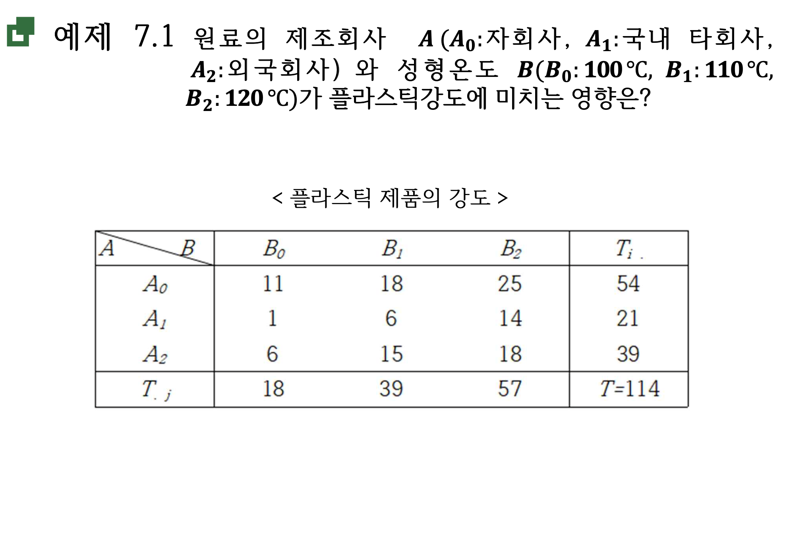
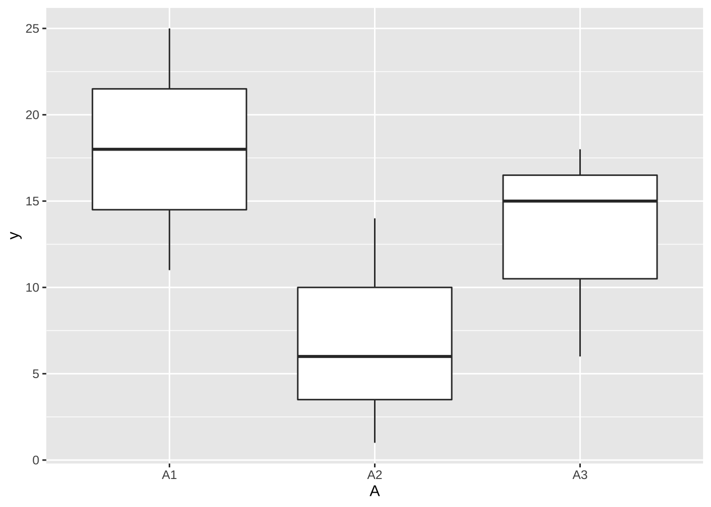
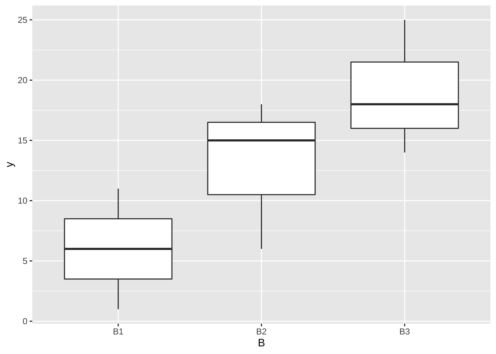
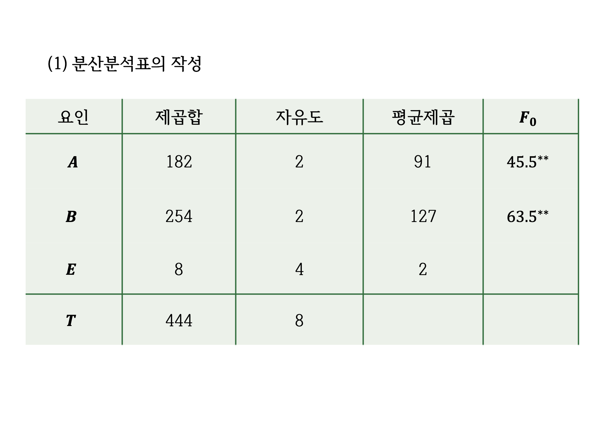
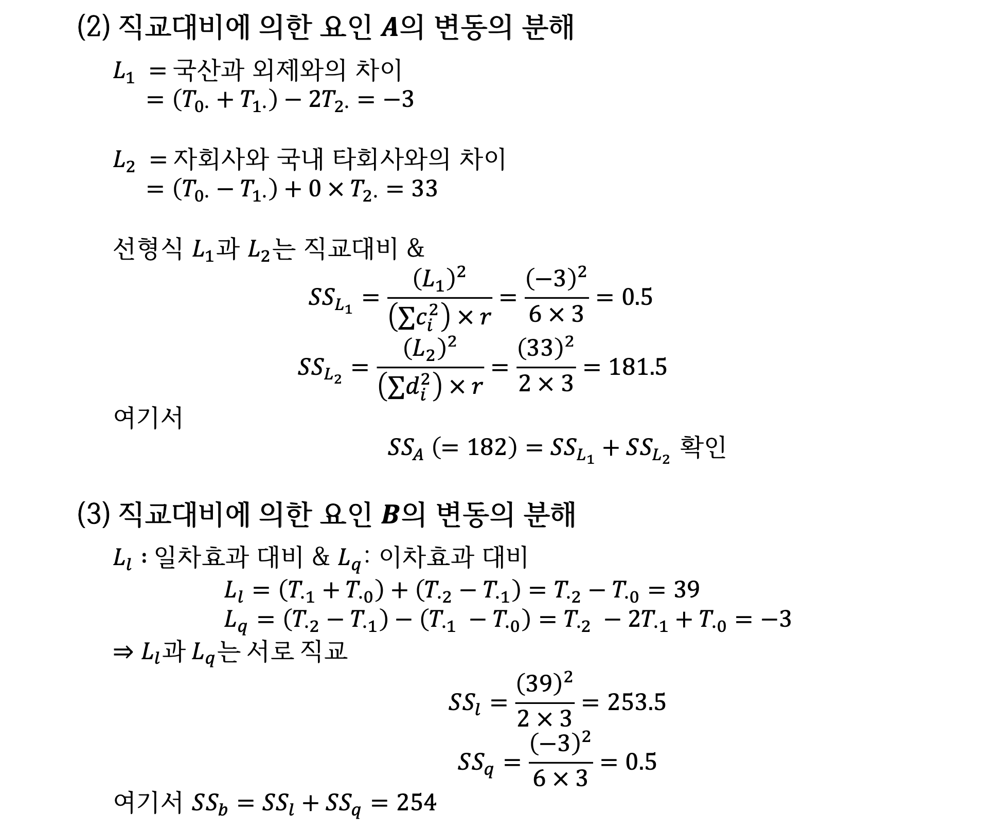

제 3 장 교과서 예제 7.1
3.1 이원배치 자료

이원배치 자료
y <- c(11,18,25,1,6,14,6,15,18)
A <- factor(c(rep(c("A1", "A2","A3"), each=3)))
B <- factor(c(rep(c("B1", "B2","B3"), 3)))
df <- data.frame(A,B,y)
df## A B y
## 1 A1 B1 11
## 2 A1 B2 18
## 3 A1 B3 25
## 4 A2 B1 1
## 5 A2 B2 6
## 6 A2 B3 14
## 7 A3 B1 6
## 8 A3 B2 15
## 9 A3 B3 18df %>% ggplot( aes(x = A , y = y) ) + geom_boxplot()
df %>% ggplot( aes(x = B , y = y) ) + geom_boxplot()
3.2 분산분석표

분산분석표
fm1 <- aov(y~A+B, data=df)
summary(fm1)## Df Sum Sq Mean Sq F value Pr(>F)
## A 2 182 91 45.5 0.00177 **
## B 2 254 127 63.5 0.00093 ***
## Residuals 4 8 2
## ---
## Signif. codes: 0 '***' 0.001 '**' 0.01 '*' 0.05 '.' 0.1 ' ' 13.3 직교대비에 대한 제곱합의 분해

제곱합의 분해
3.4 직교대비에 대한 검정
3.4.1 요인 A: 제조 회사에 대한 직교 대비
# 직교 대비 계수 설정
c1 <- c(1, 1, -2) # 국산 대 외제
c2 <- c(1, -1, 0) # 자사 대 국내사
#직교대비 행렬 생성
matA <- cbind(c1,c2)
matA## c1 c2
## [1,] 1 1
## [2,] 1 -1
## [3,] -2 0# 요인에 대한 대비 지정
contrasts(df$A) <- matA
# 직교대비에 대한 검정
fm1 <- aov(y~A+B, data=df) # 직교대비 지정한 후에 다시 분산분석을 해주어야 한다.
summary.aov(fm1 , split=list(A=list("국산 대 외제"=1, "자사 대 국내사" = 2))) ## Df Sum Sq Mean Sq F value Pr(>F)
## A 2 182.0 91.0 45.50 0.00177 **
## A: 국산 대 외제 1 0.5 0.5 0.25 0.64333
## A: 자사 대 국내사 1 181.5 181.5 90.75 0.00068 ***
## B 2 254.0 127.0 63.50 0.00093 ***
## Residuals 4 8.0 2.0
## ---
## Signif. codes: 0 '***' 0.001 '**' 0.01 '*' 0.05 '.' 0.1 ' ' 13.4.2 요인 B: 성형온도에 대한 직교 대비
# 요인에 대한 대비 지정
contrasts(df$B) <- contr.poly(3)
# 직교대비에 대한 검정
fm1 <- aov(y~A+B, data=df) # 직교대비 지정한 후에 다시 분산분석을 해주어야 한다.
summary(fm1 , split=list(B=list("선형"=1, "이차" = 2))) ## Df Sum Sq Mean Sq F value Pr(>F)
## A 2 182.0 91.0 45.50 0.00177 **
## B 2 254.0 127.0 63.50 0.00093 ***
## B: 선형 1 253.5 253.5 126.75 0.00035 ***
## B: 이차 1 0.5 0.5 0.25 0.64333
## Residuals 4 8.0 2.0
## ---
## Signif. codes: 0 '***' 0.001 '**' 0.01 '*' 0.05 '.' 0.1 ' ' 13.4.3 두 요인을 모두 나타내는 분산분석
fm1 <- aov(y~A+B, data=df) # 직교대비 지정한 후에 다시 분산분석을 해주어야 한다.
summary(fm1 , split=list( A=list("국산 대 외제"=1, "자사 대 국내사" = 2), B=list("선형"=1, "이차" = 2))) ## Df Sum Sq Mean Sq F value Pr(>F)
## A 2 182.0 91.0 45.50 0.00177 **
## A: 국산 대 외제 1 0.5 0.5 0.25 0.64333
## A: 자사 대 국내사 1 181.5 181.5 90.75 0.00068 ***
## B 2 254.0 127.0 63.50 0.00093 ***
## B: 선형 1 253.5 253.5 126.75 0.00035 ***
## B: 이차 1 0.5 0.5 0.25 0.64333
## Residuals 4 8.0 2.0
## ---
## Signif. codes: 0 '***' 0.001 '**' 0.01 '*' 0.05 '.' 0.1 ' ' 1
직교대비에 대한 분산분석표